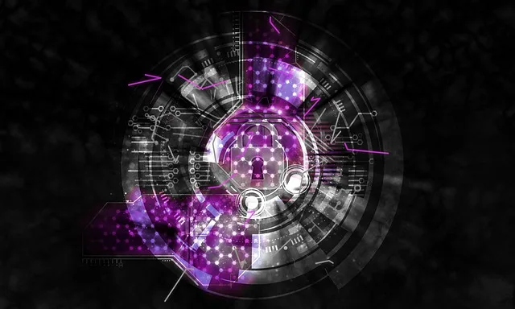

We believe security software like Whonix needs to remain Open Source and independent. Would you help sustain and grow the project? Learn more about our 14 year success story and maybe DONATE!
Essential Host SecurityDocumentationOnionizing RepositoriesPrevious page: Essential Host SecurityIndex page: DocumentationNext page: Onionizing RepositoriesHost Firewall
Open the file /usr/local/etc/torrc.d/50_user.conf in a
 text editor of your choice with administrative rights.
text editor of your choice with administrative rights.

Host Firewall Settings and Testing
Upstream

Redirection to Kicksecure Documentation
- Introduction: Whonix Documentation Introduction, User Expectations, Footnotes and References, User Expectations - What Documentation Is and What It Is Not
- Whonix is based on Kicksecure™: Whonix is built on top of Kicksecure. This means it uses many of the same security tools, design concepts, and configurations.
- Kicksecure is based on Debian: Kicksecure is developed using Debian as its base. Debian is a widely used, stable, and free Linux operating system.
- Inheritance: As a result, Whonix is also based on Debian.
- Debian is GNU/Linux-based: Debian is built using the GNU/Linux operating system. GNU provides essential tools and Linux is the system's kernel (core).
- Shared documentation benefits: Since each system is based on the one below it, a lot of documentation and guides are shared. This reduces the need to duplicate information.
- Inherited documentation: Most instructions and explanations are inherited from Kicksecure or Debian, unless otherwise specified.
- Shared principles: The systems share similar security goals and setup instructions. In most cases, users can follow Kicksecure documentation when using Whonix.
- Keep using Whonix: This does not mean users should switch to Kicksecure. This page only points to related, helpful information.
- Where to apply the instructions: Follow the instructions inside Whonix unless specifically stated otherwise.
- Wiki editors notice: This information is pulled from a reusable wiki template: upstream_wiki. (See which pages use this.)
- Comparison: Whonix versus Kicksecure
- Documentation compatibility: Because Whonix is based on Kicksecure, you can often follow Kicksecure's instructions as long as you apply them in the right place.
- Summary: Whonix is built on top of Kicksecure, which itself is based on Debian. Debian is a GNU/Linux operating system. This layered design means Whonix inherits many features, tools, and documentation from both Kicksecure and Debian.
- Click here: Visit the related page in the Kicksecure wiki for full documentation and background:
 Host Firewall
Host Firewall
- Note: Re-interpretation...
Apply the instructions inside Whonix, not inside Kicksecure.
Kicksecure: Perform these steps inside Kicksecure.
Instead, apply the steps inside Whonix-Workstation.
Kicksecure for Qubes: Perform these steps inside Qubes
kicksecure-18Template.
Instead, use the whonix-workstation-18 Template for
these steps.
Whonix specific
Filtering Ports
Introduction
From time to time a user asks which incoming/outgoing ports are required by Whonix-Gateway™. The answer is:
- Incoming:
none. - Outgoing:
all.
An alternative technique for controlling ports might be corridor (a Tor traffic whitelisting gateway), since it can act as a firewall. [1]
Incoming
Whonix-Gateway itself does not open any ports. Users are advised to close all ports on the host as outlined in the Host Firewall Essentials entry.
Outgoing
 Warning: This procedure is not recommended. Port-based
filtering of outgoing traffic is not applicable (as in useful) in the
case of Whonix-Gateway.
Warning: This procedure is not recommended. Port-based
filtering of outgoing traffic is not applicable (as in useful) in the
case of Whonix-Gateway.
Filtering outgoing ports is difficult, since Tor entry guards or bridges listen on a variety of different ports. Limiting ports Tor uses for outgoing traffic is still possible, but recommended against, since it reduces anonymity. The effect is fewer entry guards or bridges are made available to the user. If users wish to proceed despite the risk, follow the instructions below.
On Whonix-Gateway.
Tor configuration file.
1 Sysmaint notice.
Ensure the VM has administrative (sudo / root) access first. See also sysmaint.
2 Platform specific. Select your platform.
Non-Qubes-Whonix
Requires booting into sysmaint session or
 unrestricted admin mode.
unrestricted admin mode.
Graphical Whonix-Gateway USER Session
This is not possible.
Graphical Whonix-Gateway SYSMAINT Session
If you are using a graphical Whonix-Gateway booted into
PERSISTENT Mode | SYSMAINT Session, take the following
step.
System Maintenance Panel ->
Open Terminal -> run
/usr/libexec/gateway-shortcuts/torrc
Graphical Whonix-Gateway Unrestricted Admin Mode
If you are using a graphical Whonix-Gateway and enabled
 unrestricted admin mode, take the following step.
unrestricted admin mode, take the following step.
Start Menu -> System Tools ->
Tor User Config
Terminal Whonix-Gateway
If you are using Whonix-Gateway with command line
interface (CLI), take the following step.
sudoedit
/usr/local/etc/torrc.d/50_user.conf
Requires booting into sysmaint session or
 unrestricted admin mode.
unrestricted admin mode.
Graphical Qubes-Whonix
If you are using Qubes-Whonix™ with a graphical desktop, take the following step.
Qubes App Launcher (blue/grey "Q") ->
Service ->
Whonix-Gateway™ ProxyVM (commonly named sys-whonix)
-> Tor User Config
Terminal Qubes-Whonix
If you are using Qubes-Whonix™ with a terminal, open
a terminal in sys-whonix and run the following command.
sudoedit /usr/local/etc/torrc.d/50_user.conf
Add.
ReachableDirAddresses *:80 ReachableORAddresses *:443
- maybe: FirewallPorts PORTS
- See Tor manual: https://2019.www.torproject.org/docs/tor-manual.html.en
Save.
Reload Tor.
After changing Tor configuration, Tor must be reloaded for changes to take effect.
Note: If Tor does not connect after completing all
these steps, then a user mistake is the most likely explanation. Recheck
/usr/local/etc/torrc.d/50_user.conf and repeat the steps
outlined in the sections above. If Tor then connects successfully, all
the necessary changes have been made.
If you are using Qubes-Whonix™, complete the following steps.
Qubes App Launcher (blue/grey "Q") →
Service →
Whonix-Gateway™ ProxyVM (commonly named 'sys-whonix')
→ Reload Tor
If you are using a graphical Whonix-Gateway, complete the following steps.
Start Menu → System Tools →
Reload Tor
If you are using a terminal Whonix-Gateway, click
HERE
for instructions.
Complete the following steps.
Reload Tor.
sudo systemctl reload tor@default.service
Check Tor's daemon status.
sudo systemctl status tor@default.service
It should include a a message saying.
Active: active (running) since ...In case of issues, try the following debugging steps.
Check Tor's config.
sudo -u debian-tor tor --verify-config
The output should be similar to the following.
Sep 17 17:40:41.416 [notice] Read configuration file "/usr/local/etc/torrc.d/50_user.conf".
Configuration was validThis issue was also discussed in the old Whonix forum.
Footnotes
Categories: Documentation